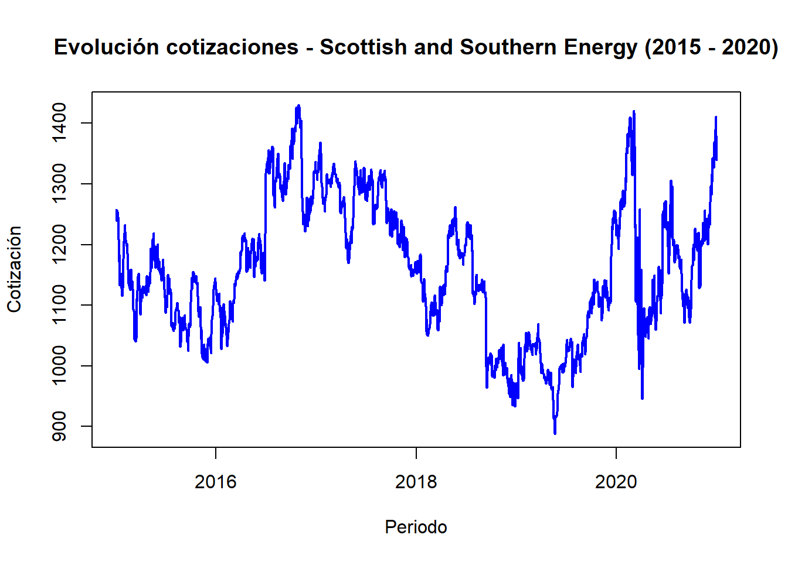
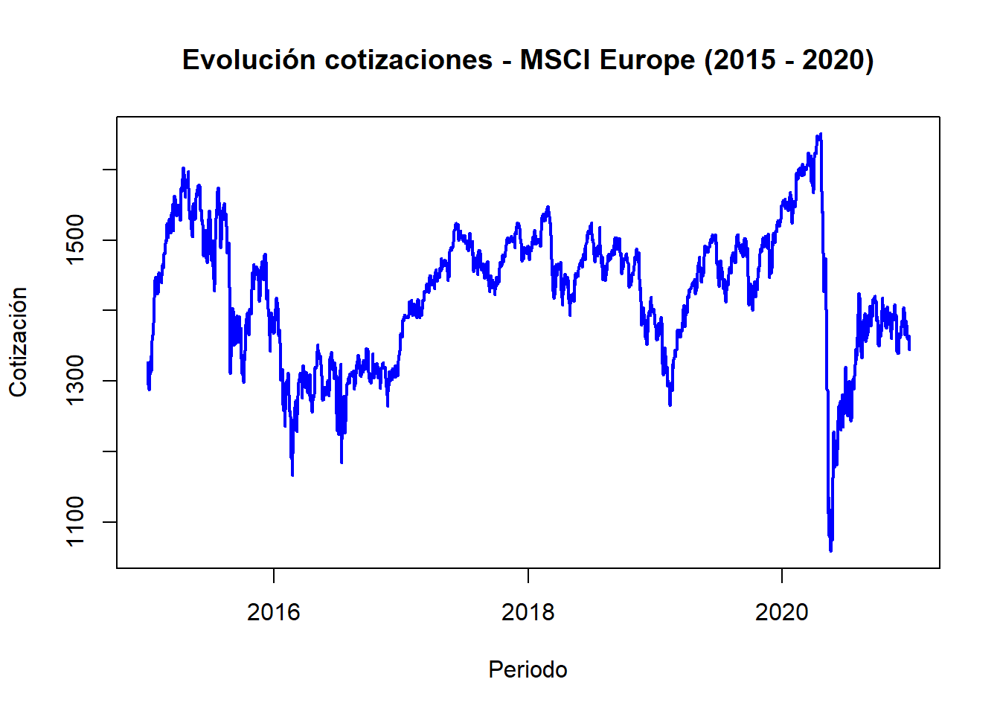
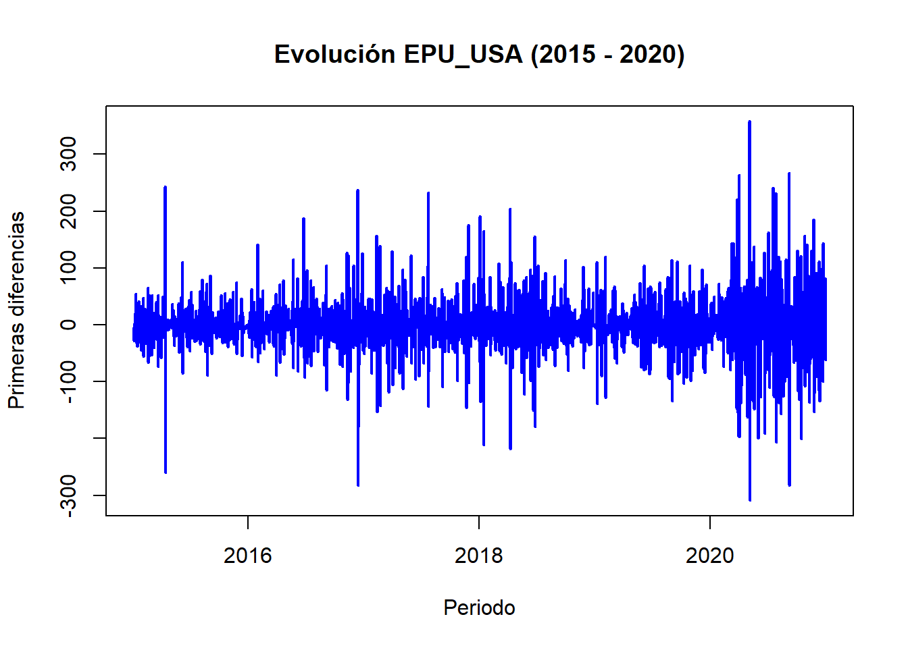

library(readxl)Warning: package 'readxl' was built under R version 4.2.3#Cargo la base datos con la que se va a trabajar:
data <- read_excel("risk.xlsx")New names:
• `` -> `...1`#Me quedo con las columnas que me interesan:
data_lon <- data[, -c(2:13)]
#Primera columna son las fechas:
colnames(data_lon)[colnames(data_lon) == "...1"] <- "Fecha"
#Doy formato de fecha:
data_lon$Fecha <- as.Date(data_lon$Fecha, format = "%Y/%m/%d")
#Elimino na:
data_lon <- na.omit(data_lon)
###### ANÁLISIS DESCRIPTIVO:
#Gráfico de cotizaciones Scottish and Southern Energy:
plot(data_lon$Fecha, data_lon$eLON_SSE, type = "l", col = "blue", lwd = 2,
xlab = "Periodo", ylab = "Cotización", main = "Evolución cotizaciones - Scottish and Southern Energy (2015 - 2020)")
#Gráfico de cotizaciones Drax Group:
plot(data_lon$Fecha, data_lon$eLON_DRAX, type = "l", col = "blue", lwd = 2,
xlab = "Periodo", ylab = "Cotización", main = "Evolución cotizaciones - Drax Group (2015 - 2020)")#Gráfico de cotizaciones MSCI Europe:
plot(data_lon$Fecha, data_lon$`MSCI EUR`, type = "l", col = "blue", lwd = 2,
xlab = "Periodo", ylab = "Cotización", main = "Evolución cotizaciones - MSCI Europe (2015 - 2020)")
#Gráfico de cotizaciones Futuros del gas:
plot(data_lon$Fecha, data_lon$PrGasF, type = "l", col = "blue", lwd = 2,
xlab = "Periodo", ylab = "Cotización", main = "Evolución cotizaciones - Futuros del gas (2015 - 2020)")#Calculo rendimientos usando logaritmos:
library(dplyr)Warning: package 'dplyr' was built under R version 4.2.3
Attaching package: 'dplyr'
The following objects are masked from 'package:stats':
filter, lag
The following objects are masked from 'package:base':
intersect, setdiff, setequal, uniondata_lon <- data_lon %>%
mutate(across(
.cols = c(eLON_SSE, eLON_DRAX, `MSCI EUR`, PrGasF),
.fns = ~ log(. / lag(.)),
.names = "rend_{.col}"
))
data_lon <- na.omit(data_lon)
#Gráfica de rendimientos Scottish and Southern Energy:
plot(data_lon$Fecha, data_lon$rend_eLON_SSE, type = "l", col = "blue", lwd = 2,
xlab = "Periodo", ylab = "Rendimiento", main = "Evolución rendimientos - Scottish and Southern Energy (2015 - 2020)")#Gráfica de rendimientos Drax Group:
plot(data_lon$Fecha, data_lon$rend_eLON_DRAX, type = "l", col = "blue", lwd = 2,
xlab = "Periodo", ylab = "Rendimiento", main = "Evolución rendimientos - Drax Group (2015 - 2020)")#Gráfica de rendimientos MSCI:
plot(data_lon$Fecha, data_lon$`rend_MSCI EUR`, type = "l", col = "blue", lwd = 2,
xlab = "Periodo", ylab = "Rendimiento", main = "Evolución rendimientos - MSCI (2015 - 2020)")#Gráfica de rendimientos de Futuros Gas:
plot(data_lon$Fecha, data_lon$rend_PrGasF, type = "l", col = "blue", lwd = 2,
xlab = "Periodo", ylab = "Rendimiento", main = "Evolución rendimientos - Futuros del Gas (2015 - 2020)")#Calculo las primeras diferencias de las variables de incertidumbre: EPU, VSTOXX, OVX.
data_lon <- data_lon %>%
mutate(across(
.cols = c(VSTOXX, EPU_USA, `OVX EUR`),
.fns = ~ . - lag(.),
.names = "dif_{.col}"
))
data_lon <- na.omit(data_lon)
#Gráfica primeras diferencias VSTOXX:
plot(data_lon$Fecha, data_lon$dif_VSTOXX, type = "l", col = "blue", lwd = 2,
xlab = "Periodo", ylab = "Primeras diferencias", main = "Evolución VSTOXX (2015 - 2020)")#Gráfica primeras diferencias EPU_USA:
plot(data_lon$Fecha, data_lon$dif_EPU_USA, type = "l", col = "blue", lwd = 2,
xlab = "Periodo", ylab = "Primeras diferencias", main = "Evolución EPU_USA (2015 - 2020)")
#Gráfica primeras diferencias OVX:
plot(data_lon$Fecha, data_lon$`dif_OVX EUR`, type = "l", col = "blue", lwd = 2,
xlab = "Periodo", ylab = "Primeras diferencias", main = "Evolución OVX (2015 - 2020)")
#Creo nuevo dataframe "paisDATA":
paisDATA <- data_lon[, -c(1:8)]
#Estadisticos principales de paisDATA:
library(fBasics)Warning: package 'fBasics' was built under R version 4.2.3summary(paisDATA) rend_eLON_SSE rend_eLON_DRAX rend_MSCI EUR
Min. :-1.097e-01 Min. :-0.3167595 Min. :-1.331e-01
1st Qu.:-7.337e-03 1st Qu.:-0.0119779 1st Qu.:-5.091e-03
Median : 6.373e-04 Median :-0.0005275 Median : 4.471e-04
Mean : 5.132e-05 Mean : 0.0000101 Mean : 2.482e-05
3rd Qu.: 8.347e-03 3rd Qu.: 0.0123029 3rd Qu.: 5.847e-03
Max. : 1.130e-01 Max. : 0.1470776 Max. : 7.910e-02
rend_PrGasF dif_VSTOXX dif_EPU_USA
Min. :-0.1543001 Min. :-11.897900 Min. :-308.9500
1st Qu.:-0.0146223 1st Qu.: -0.778000 1st Qu.: -25.0500
Median :-0.0008097 Median : -0.097100 Median : -0.3930
Mean :-0.0000344 Mean : -0.008756 Mean : 0.1429
3rd Qu.: 0.0133198 3rd Qu.: 0.615800 3rd Qu.: 24.3300
Max. : 0.3169831 Max. : 17.758100 Max. : 358.2800
dif_OVX EUR
Min. :-84.03120
1st Qu.: -0.95687
Median : -0.08235
Mean : -0.01146
3rd Qu.: 0.83839
Max. :119.96342 basicStats(paisDATA) rend_eLON_SSE rend_eLON_DRAX rend_MSCI.EUR rend_PrGasF dif_VSTOXX
nobs 1515.000000 1515.000000 1515.000000 1515.000000 1515.000000
NAs 0.000000 0.000000 0.000000 0.000000 0.000000
Minimum -0.109654 -0.316759 -0.133100 -0.154300 -11.897900
Maximum 0.113047 0.147078 0.079104 0.316983 17.758100
1. Quartile -0.007337 -0.011978 -0.005091 -0.014622 -0.778000
3. Quartile 0.008347 0.012303 0.005847 0.013320 0.615800
Mean 0.000051 0.000010 0.000025 -0.000034 -0.008756
Median 0.000637 -0.000527 0.000447 -0.000810 -0.097100
Sum 0.077748 0.015343 0.037606 -0.052064 -13.265300
SE Mean 0.000421 0.000653 0.000302 0.000798 0.048255
LCL Mean -0.000775 -0.001270 -0.000567 -0.001599 -0.103409
UCL Mean 0.000877 0.001290 0.000616 0.001530 0.085897
Variance 0.000269 0.000645 0.000138 0.000964 3.527708
Stdev 0.016389 0.025400 0.011740 0.031044 1.878219
Skewness -0.524637 -0.831504 -1.404311 1.569942 1.134902
Kurtosis 7.472268 19.513313 15.449558 14.920416 13.193518
dif_EPU_USA dif_OVX.EUR
nobs 1515.000000 1515.000000
NAs 0.000000 0.000000
Minimum -308.950000 -84.031196
Maximum 358.280000 119.963420
1. Quartile -25.050000 -0.956867
3. Quartile 24.330000 0.838390
Mean 0.142878 -0.011461
Median -0.393000 -0.082346
Sum 216.460000 -17.363605
SE Mean 1.451261 0.150084
LCL Mean -2.703818 -0.305856
UCL Mean 2.989574 0.282934
Variance 3190.832038 34.125733
Stdev 56.487450 5.841723
Skewness 0.104955 4.705039
Kurtosis 5.236949 210.813827#Matriz de correlación de Spearman:
cor_spearman <- cor(paisDATA, method = "spearman")